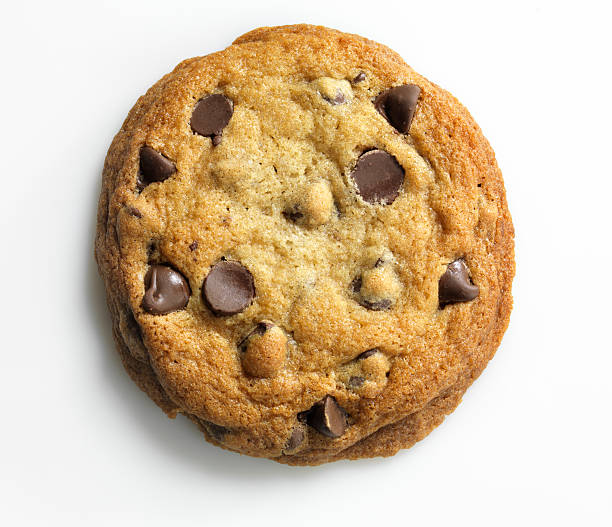

Cookies

Description
Everyone needs a classic chocolate chip cookie recipe in their repertoire,
and this is mine. It is seriously the Best Chocolate Chip Cookie Recipe Ever!
Ingredients
- 1 cup of salted butter
- 1 cup of white sugar
- 1 cup of brown sugar
- 3 cups of flour
- 2 seaspoons pure vanilla extract
- 2 large eggs
- 1 teaspoon baking soda
- 1 teaspoon sea salt
- 2 cups of chocolate chips
Steps
- Preheat oven to 375 degrees F. Line three baking sheets with parchment paper and set aside.
- In a medium bowl mix flour, baking soda, baking powder and salt. Set aside.
- Cream together butter and sugars until combined.
- Beat in eggs and vanilla until light (about 1 minute).
- Mix in the dry ingredients until combined.
- Add chocolate chips and mix well.
- Roll 2-3 Tablespoons (depending on how large you like your cookies) of
dough at a time into balls and place them evenly spaced on your prepared
cookie sheets.
- Bake in preheated oven for approximately 8-10 minutes. Take them out
when they are just barely starting to turn brown.
- Let them sit on the baking pan for 2 minutes before removing to cooling rack.